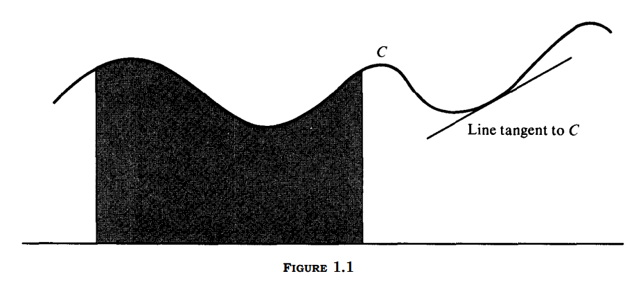

Mathematics
21/08/20
Calculus_V1, Tom M. Apostol, Preface
“The approach in this book has been suggested by the historical and philosophical development of calculus and analytic geometry. For example, integration is treated before differentiation. Although to some this may seem unusual, it is historically correct and pedagogically sound."
"The concept of the integral is defined first for step functions. Since the integral of a step function is merely a finite sum, integration theory in this case is extremely simple."
"Volume 1 deals with the calculus of functions of one variable, including infinite series and an introduction to differential equations. The last third of Volume 1 introduces linear algebra with applications to geometry and analysis."
Calculus_v1, Tom M. Apostol, Introduction
Part 1. Historical introduction
1.1 The two basic concepts of calculus
"Calculus is more than a technical tool-it is a collection of fascinating and exciting ideas that have interested thinking men for centuries. These ideas have to do with speed, area, volume, rate of groth, continuity, tangent line, and other concepts from a variety of fields. Calculus forces us to stop and think carefully about the meanings of these concepts. Another remarkable feature of this subject is its unifying power. Most of these ideas can be formulated so that they revolve around two rather specialized problems of geometric nature. We turn now to a brief description of these problems."
"The shaded portion of the figure consists of those points which lie below the curve C, above the horizontal base, and between two parallel vertical segments joining C to the base. The first fundamental problem of caculus is this: To assign a number which measures the area of this shaded region"
"The second fundamental problem may be stated as follows: To assign a number which measures the steepness of this line."

"Basically, calculus has to do with the precise formulation and solution of these two sepcial problems. It enables us to define the concepts of area and tangent line and to calculate the area of a given region or the steepness of a given tangent line. Integral calculus deals with the problem of area and will be discussed in Chapter 1. Differential calculus deals with the problem of tangents and will be introduced in Chapter 4."
1.2 Historical background
"The birth of integral calculus occurred more than 2000 years ago when the Greeks attempted to determine areas by a process which they called the method of exhaustion. The essential idea of this method can be described briefly as follows: Given a region whose area is to be determined, we inscribe in it a polygonal region which approximates the given region and whose area we can easily compute. Then we choose another polygonal region which gives a better approximation, and we continue the process, taking polygons with more and more sides in an attempt to exhaust the given region.(...) It was successfully used by Archimedes to find exact formulas for the area of a circle and a few other special figures."
"The development of the method of exhaustion beyond the point to which Archimedes carried it hat to wait nearly eighteen centuries until the use of algebraic symbols and techniques became a standard part of mathematics."
"A slow but revolutionary change in the development of mathematical notations began in the 16th Century A.D. The cumbersome system of Roman numerals was gradually displaced by the Hindu-Arabie characters used todaym the symbols + and - were introduces for the first time, and the advantages of the decimal notation began to be recognized. During this same period, the brilliant successes of the Italian mathematicians Tartaglia, Cardano, and Ferrari in finding algebraic solutions of cubic and quartic equations stimulated a great deal of activity in mathematics and encouraged the growth and acceptance of a new and superior algebraic language. With the widespread introduction of well-chosen algebraic symbols, interest was revived in the ancient method of exhaustion and a large number of fragmentary results were discovered in the 16th Century by such pioneers as Cavalieri, Toricelli, Roberval, Fermat, Pascal, and Wallis."
"In the 17th Century, largely due to the efforts of Issac Newton and Gottfied Leibniz, and its development continued well tinto the 19th Century before the subject was put on a firm mathematical basis by such men as Augustin_Louis Cauchy and Bernhard Riemann."